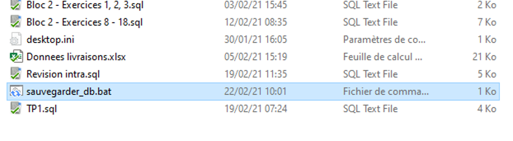
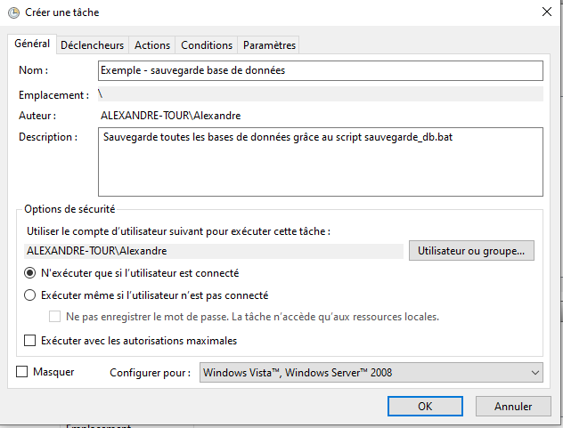

Chapitre 3
Sauvegarder et restaurer la base de données
Contenu
- Établir une stratégie de sauvegarde de la BD
- Sauvegarder et restaurer une BD
- Automatisation des sauvegardes
Établir une stratégie de sauvegarde de la BD
Pourquoi sauvegarder une BD? Stratégie 3-2-1 Étapes d’une stratégie de sauvegarde
Pourquoi sauvegarder une BD?
Pouvoir restaurer la BD dans les cas de : * Destruction accidentelle (DROP *) * Bris de serveur (usure/Ti-Guy qui a encore échappé son café) * Attaque de pirates visant à détruire notre BD * Manipulation erronée (ex. par du développement) * Récréer les données suite à changement d’environnement (mise à jour MySQL) * Avant un déploiement en production * Cataclysme naturel, incendie ou invasion d’extra-terrestres qui détruisent le serveur physique
Importance de la sauvegarde
Une perte de données coûte en moyenne entre 4,4 millions au Canada (2021).
Selon certains fournisseurs de stockage, jusqu’à la moitié des entreprises perdront des données au cours de leurs opérations.
La stratégie 3-2-1
Présentée comme un standard, la règle du 3-2-1 est la suivante:
- 3 copies de chaque donnée
- 2 copies «onsite» (sur le même lieu physique)
- 1 copie «offsite» (dans un emplacement physique différent)
Étapes d’une stratégie de sauvegarde
-
Déterminer les données à sauvegarder?
-
Qu’est-ce qui est critique?
- Grouper par groupe : critique pour survivre, important pour opérer, optimal pour le développement
- Qu’est-ce qui est suffisamment important pour investir dans sa sauvegarde?
- Dans cette question, évaluez le rapport quantité/coût. Faire une sauvegarde de Facebook (+/- 100 Po) est plus lourd qu’une sauvegarde de Wikipédia (+/- 10TB).
Étapes d’une stratégie de sauvegarde
-
Déterminer la fréquence des sauvegardes?
-
Sauvegardes périodiques (quotidienne, hebdomadaire)
- Quelle quantité de travail on peut se permettre de perdre?
- Sauvegarde exceptionnelle
- Quand ces sauvegardes sont-elles requises?
Étapes d’une stratégie de sauvegarde
-
Choisir et mettre en place une stratégie
-
Préparer deux serveurs locaux (2)
- Préparer un serveur distance/souscrire à un service (1)
- Décrire un système d’organisation des sauvegardes
- Nomenclature/emplacement logiciel
- Mettre en place une routine de sauvegarde (périodique)
- Mettre en place une procédure de sauvegarde exceptionnelle
Étapes d’une stratégie de sauvegarde
-
Tester (régulièrement) et assurer la maintenance
-
Ne pas tenter la loi de Murphy/loi de l’emmerdement maximal
- La journée que vous avez besoin de restaurer la sauvegarde, il y a intérêt à ce que ça fonctionne
- Tenez compte des modifications aux structures de données
- Avec l’évolution du projet, la stratégie de sauvegarde doit évoluer
Types de sauvegarde
- Sauvegarde complète
- Crée une copie complète de toutes les données
- Pour : facile à mettre en place et diminue les risques d’incohérence à la restauration
- Contre : demande beaucoup d’espace de stockage, car duplique l’information
- Sauvegarde différentielle
- Crée une copie seulement des changements
- Pour : ne duplique pas l’information de sauvegarde
- Contre : système de restauration plus complexe qui peut s’effondrer si l’historique est corrompu.
Sauvegarder et restaurer une BD
Dumping Charger une sauvegarde Dumping dans un format texte Charger des données d’un format texte
Dumping
Le «dumping» consiste à générer le code SQL pour recréer complètement la base de données (CREATE DATABASE, TABLE et INSERT INTO).
Ce fichier comporte de nombreuses instructions SQL supplémentaires pour assurer que les données sont restaurées normalement.
Dumping
Dans une invite de commande située là où votre exécutable MySQL est placé, entrez la commande suivante (Windows)
.\mysqldump.exe --databases nom1 nom2 … > chemin/fichier.sql –unom_utilisateur –p
Exemple :
.\mysqldump.exe --databases ecole … > ../ecole_backup.sql –uroot –p
````
Puis saisissez le mot de passe du compte.
---
## Dumping
Dans le répertoire parent, vous trouverez le fichier ecole_backup.sql.
Pour exporter toutes les bases de données, on remplace
«--databases nom1» par «--all-databases»
On peut omettre l’option databases si l’on en exporte qu’une
```console
.\mysqldump.exe nom_db > chemin/fichier.sql –unom_utilisateur –p
Charger une BD à partir d’un fichier de sauvegarde
Pour charger la BD, c’est simple : il suffit d’exécuter le script mysql!
Soit à travers Workbench ou avec l'invite de commandes
mysql < fichier.sql
Table corrompue
Une instruction permet de récupérer les données d’une table dont le fichier de sauvegarde serait corrompu.
REPAIR TABLE Nom_table EXTENDED;
https://dev.mysql.com/doc/refman/8.0/en/repair-table.html
Dumping dans un fichier texte
Il est possible d’exporter le contenu des tables dans des fichiers de format texte afin de les lire avec d’autres logiciels.
On trouve notamment le format Comma Separeted Values lisible par Excel.
Le format CSV
Le format CSV vient avec un standard français et anglais (avec un simple logiciel comme Notepad++ et une toute petite REGEX, vous pouvez facilement effectuer la conversion)
- Standard anglais : séparateur de colonne «,»
- Standard français : séparateur de colonne «;»
Séparateur de ligne : (\r)\n (retour de ligne) Encapsulation des chaînes de caractère " "
Le format CSV
| id_personne | nom | prenom |
|---|---|---|
| 2 | Shutt | Steve |
| 5 | Stastny | Peter |
| 7 | Dryden | Ken |
Format anglais Id_personne,nom,prenom 2,Shutt,Steve 5,Stastny,Peter 7,Dryden,Ken
Format français Id_personne;nom;prenom 2;Shutt;Steve 5;Stastny;Peter 7;Dryden;Ken
Exporter vers CSV
Par défaut, l’exportation sépare les colonnes par une tabulation.
SELECT colonnes INTO OUTFILE 'nom_fichier'
FIELDS TERMINATED BY ','
OPTIONALLY ENCLOSED BY '"'
LINES TERMINATED BY '\n'
FROM nom_table;
Une instruction existe aussi à partir de l’invite de commande.
Gestion de droits
Par défaut (et pour d’évidentes raisons de sécurité), MySQL limite les endroits où il est possible d’exporter un fichier texte.
Dans votre fichier my.ini, il faut ajouter l’instruction suivante
[mysqld] secure_file_priv = ""
N’oubliez de redémarrez mysql après.
Charger à partir d'un fichier CSV
Pour lire un fichier CSV, on utilise l’instruction suivante:
LOAD DATA INFILE 'nom_fichier'
INTO TABLE Nom_table
FIELDS TERMINATED BY ','
FIELDS ENCLOSED BY '"'
LINES TERMINATED BY '\r\n';
Une instruction existe aussi à partir de l’invite de commande.
Automatisation des sauvegardes
Créer le script bat Programmer la tâche
Script bat
Le script bat permet de programmer un script s’exécutant dans l’invite de commande. C’est à peu près l’équivalent Windows des scripts bash des environnements UNIX.
Sauvegarder la base de données
:: declaration variable SET "date=%DATE:/=-%"
:: instructions ECHO ================ ECHO Sauvegarde auto ECHO ================ I:\Programmes\Ampps\mysql\bin\mysqldump.exe --all-databases > C:\Users\Alexandre\Desktop\backup_%date%.sql -uroot -pmysql ECHO Sauvegarde realisee avec succes
Appeler le script
Maintenant, plus qu’à double cliquer sur le script bat pour qu’il s’exécute.

Programmer la tâche
Avec le planificateur de tâche Windows (Task Scheduler), vous pouvez indiquer à Windows de démarrer une tâche à un moment donné.
Une tâche peut consister à exécuter un script bat par exemple.
Le planificateur se trouve dans « Outils d’administration Windows »
Programmer une tâche
